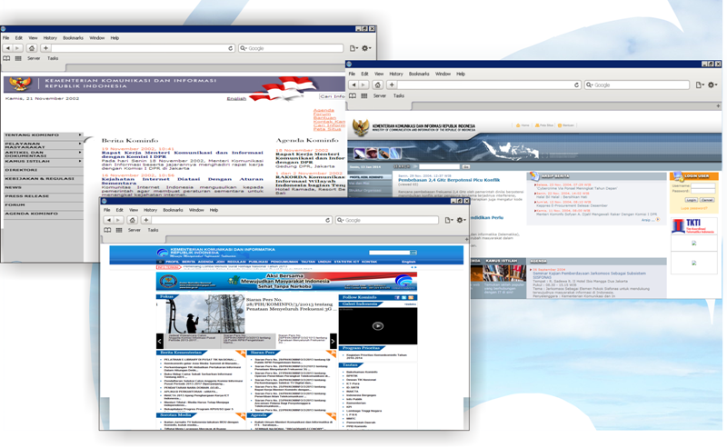

Sejarah
Kementerian Komunikasi dan Informatika (sebelumnya bernama "Departemen Penerangan" (1945-1999), "Kementerian Negara Komunikasi dan Informasi" (2001-2005), dan Departemen Komunikasi dan Informatika (2005-2009), disingkat Depkominfo) adalah Departemen/kementerian dalam Pemerintah Indonesia yang membidangi urusan komunikasi dan informatika. Kementerian Kominfo dipimpin oleh seorang Menteri Komunikasi dan Informatika (Menkominfo) yang sejak tanggal 22 Oktober 2009 dijabat oleh Tifatul Sembiring.
